Identity Lab
IAM Lab in Microsoft Entra ID
I built a complete identity and access management environment from an empty Microsoft Entra ID tenant, for a fictional company I called Mateescu Industries. The goal was to practise identity the way it is actually run and defended, not just administered: design the directory, run the user lifecycle, enforce access controls, govern privilege, and understand how each part is attacked and detected.
The lab was inspired by the four classic IAM failure modes (over-privilege, stale credentials, over-permissive roles, and no change visibility) and applies the Microsoft controls that address them: PIM for standing privilege, a secretless least-privilege app registration for workload identity, and the sign-in and audit logs for visibility. Long-term log export to a SIEM is out of scope here. The lab maps across all four SC-300 (Identity and Access Administrator) domains.
This lab runs in a throwaway tenant with fictional users, so the screenshots below show a disposable environment rather than any production system.
Project Snapshot
Overview
What I Built
- Six attribute-driven dynamic department groups
- Joiner, mover and leaver lifecycle, end to end
- MFA, Conditional Access and SSPR
- A tested break-glass emergency-access account
- PIM, access reviews and entitlement management
- SAML SSO on an enterprise application
- A least-privilege workload identity (app registration)
Skills Demonstrated
- RBAC and attribute-based access design
- Identity lifecycle automation and deprovisioning
- Zero-trust access controls and MFA strategy
- Privileged access management and least privilege
- Identity governance and recertification
- Attack / detect / harden thinking on each control
- SC-300 skill set, hands-on
Approach
Build, Attack, Detect, Harden
I treated every control the same way: build it correctly, understand how an attacker abuses it, identify the log or event that detects the abuse, and apply the hardening that closes it. That framing runs through all six phases below, because an IAM engineer is expected to run identity and defend it, not just configure it.
Phase 1 · Foundation
Dynamic Department Groups (RBAC)
I created six security groups (HR, IT, Engineering, Customer Support, Warehouse and Finance) with dynamic membership driven by each user's department attribute. Access follows the attribute: set a user's department and they land in the right group automatically, with no manual membership changes. Every group has an owner and a description stating its purpose, rule and access, and the sensitive groups (HR and Finance) are flagged for priority review.
Design
- Rule:
user.department -eq "<dept>" - Group-based access instead of per-user permissions
- Documented owner and purpose on every group
- HR and Finance tagged sensitive
Security Angle
- Abuse: group sprawl and nested groups hide excess access
- Detect: Entra audit log "Add member to group" events
- Harden: attribute-driven membership, documented owners, access reviews
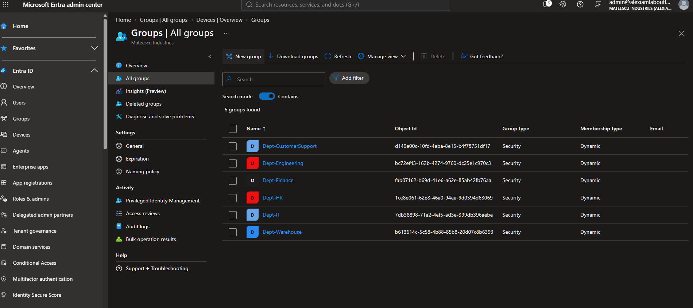
Phase 2 · Lifecycle
Joiner, Mover, Leaver
I ran the full identity lifecycle end to end. A joiner is created with a department and drops into the correct group automatically, inheriting the group's access; licences were assigned in the Microsoft 365 admin center (see Lab vs Production). A mover who changes department is re-scoped in both directions, gaining the new access and losing the old, just by changing one attribute. A leaver is disabled, their sessions revoked, their licences reclaimed, and their department cleared so they drop out of every group.
Leaver Sequence
- Block sign-in (disable account)
- Revoke sessions to invalidate refresh tokens
- Remove licences (reclaim spend)
- Clear department → drops from dynamic groups
- Retain, then delete after the retention window
Security Angle
- Abuse: un-deprovisioned leavers and over-accessed movers are the top identity attack surface
- Detect: sign-in attempts against disabled accounts; audit-log group changes
- Harden: revoke tokens on exit (a disable alone leaves sessions live); reclaim access by attribute
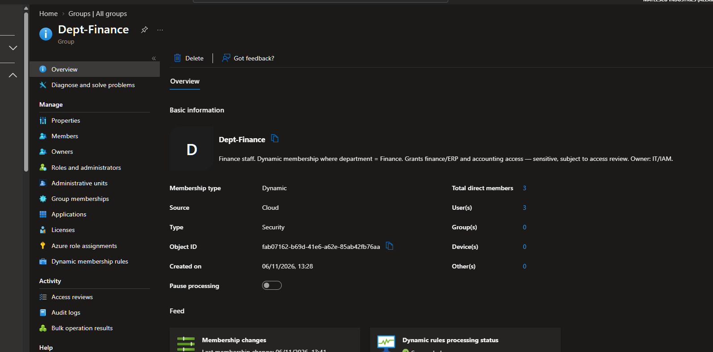
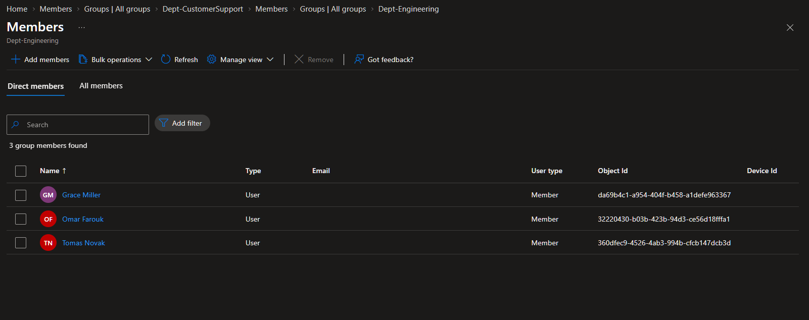
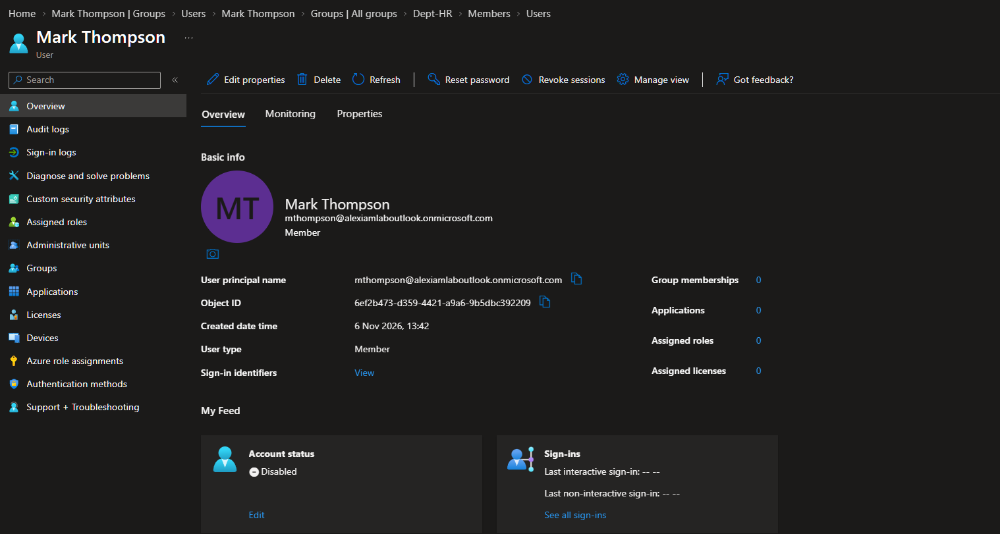
Phase 3 · Access Control
MFA, Conditional Access, SSPR & Break-Glass
I hardened authentication and enforced it with Conditional Access. The authentication methods policy allows phishing-resistant passkeys and Microsoft Authenticator, and disables the weak methods (SMS, voice, email OTP). Two Conditional Access policies were deployed in report-only first, then enforced: one requires MFA for all users, the other blocks legacy authentication. SSPR is enabled with two methods and no security questions.
Before enforcing anything, I built a break-glass emergency-access account, excluded it from Conditional Access and the registration campaign, and then tested it: the sign-in log confirmed the policy did not apply to it (“Not matched: Group exclusion”). An untested emergency account is worse than none, because you only discover it fails at the moment you need it.
Controls
- Passkey (FIDO2) + Authenticator on; SMS / voice / email OTP off
- CA01: require MFA, all users (break-glass excluded)
- CA02: block legacy authentication
- Report-only → reviewed → enforced
- SSPR: two methods, no security questions, notify on reset
Security Angle
- Abuse: password spray and legacy-auth bypass defeat password-only sign-in
- Detect: sign-in logs showing failures across many accounts from one IP; legacy-auth client sign-ins
- Harden: number-matching MFA, block legacy auth, phishing-resistant methods for admins
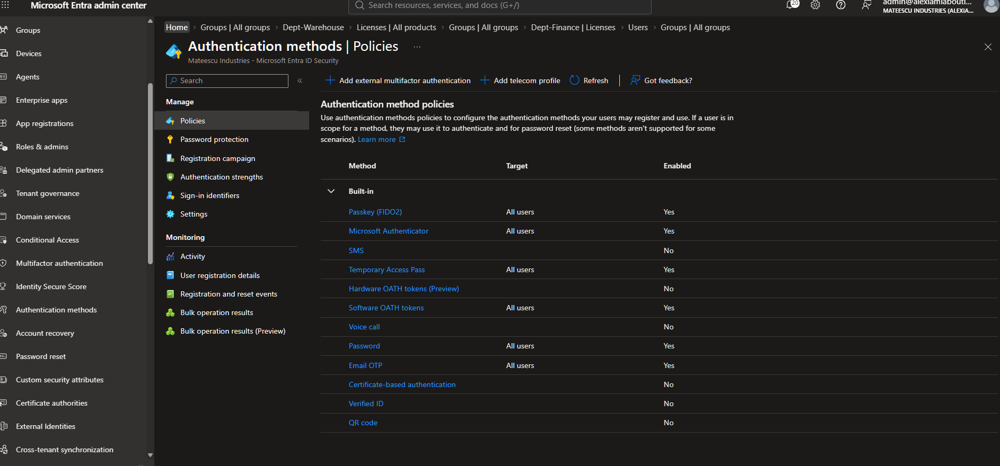
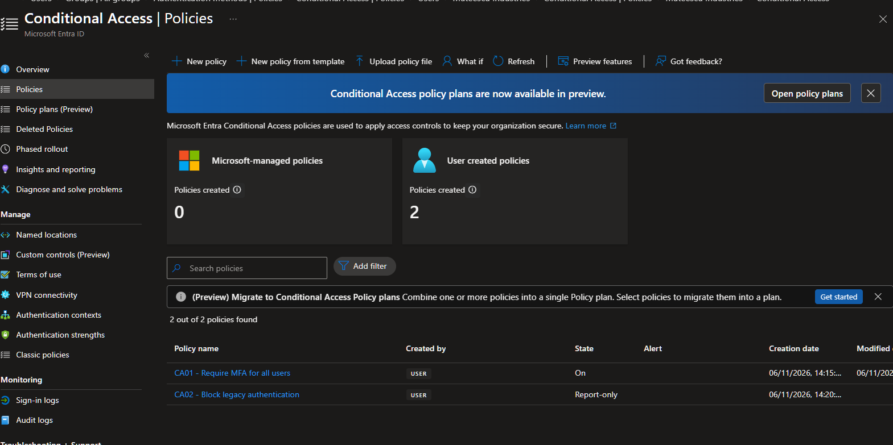
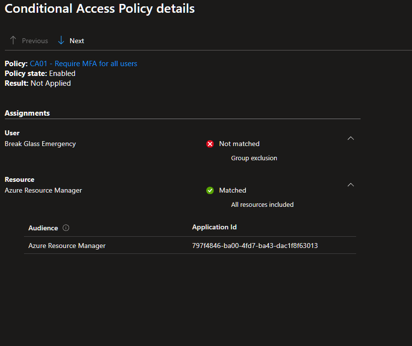
Phase 4 · Applications
Single Sign-On (SAML)
I configured SAML single sign-on on an enterprise application, assigned access through a department group rather than to individual users, and required assignment so only assigned users reach the app. SSO centralises authentication: one login, with MFA and Conditional Access enforced once, access granted by group, and every sign-in audited.
Configured
- SAML SSO (Identifier, Reply URL, Sign-on URL)
- Claims mapping (Name ID = userprincipalname)
- Group-based app assignment
- Assignment required
Security Angle
- Abuse: Golden SAML (forged assertions from a stolen signing key); reply-URL tampering
- Detect: audit-log changes to SSO config, such as a new reply URL or signing certificate
- Harden: protect and rotate the signing cert, pin the reply URL, require assignment, enforce MFA
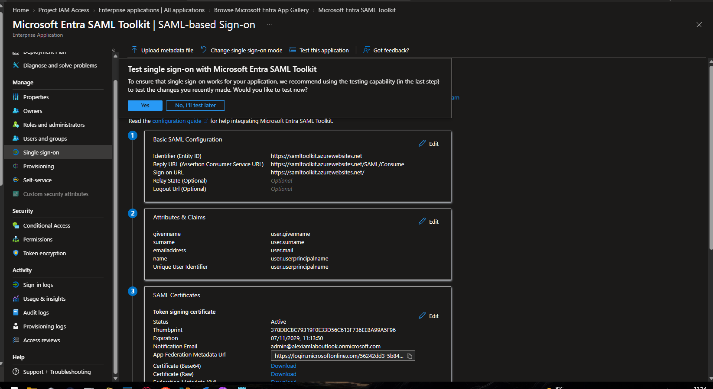
Phase 5 · Governance
PIM, Access Reviews & Entitlement Management
This is the governance layer and the hardest SC-300 domain. I first created the problem, a standing Global Administrator assignment on a user who only needed helpdesk-level access, then remediated it with Privileged Identity Management: the standing Global Admin was removed and replaced with an eligible User Administrator role (least privilege plus just-in-time), requiring MFA, a justification, approval and a four-hour activation cap.
I set up a quarterly access review to recertify membership of the break-glass exclusion group (the most dangerous group in the tenant, since anyone in it bypasses MFA) and built an entitlement management access package so users request project access through an approved, time-boxed, auditable workflow instead of being added by hand.
Governance Controls
- PIM: standing Global Admin → eligible least-privilege role
- Activation: MFA + justification + approval + 4-hour cap
- Quarterly access review of the MFA-bypass group
- Self-service access package with approval and 90-day expiry
Security Angle
- Abuse: standing admin means one compromise owns the tenant; access creep over time
- Detect: PIM audit log on every activation; audit-log role changes
- Harden: no standing privilege, JIT elevation, recurring recertification, fail-closed defaults
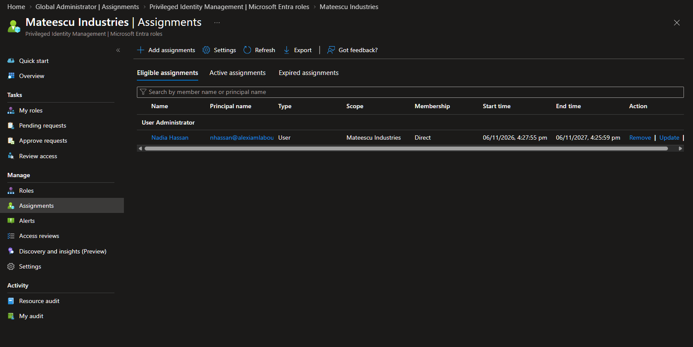
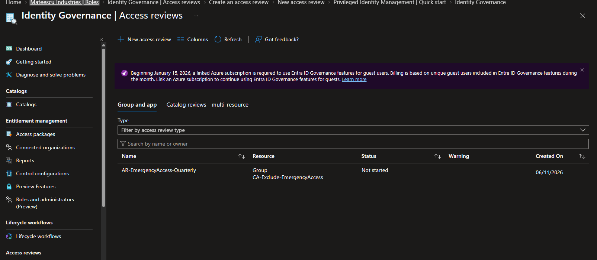
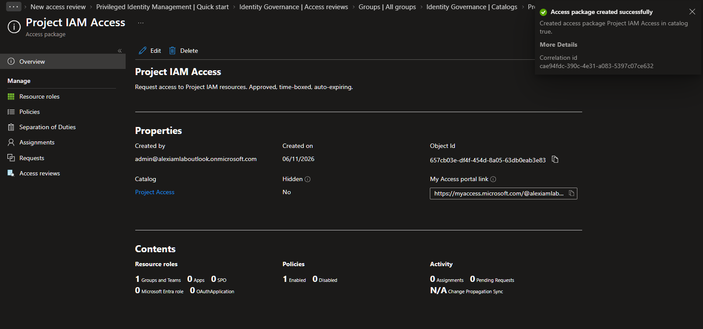
Phase 6 · Workload Identity
Least-Privilege App Registration
Identity is not only human. I registered an application (a service identity), removed the default delegated permission it did not need, and granted it only a single read-only Microsoft Graph application permission. This is the Microsoft equivalent of an over-permissioned cloud role. An app with excessive Graph permissions can escalate to tenant takeover, so the whole point was least privilege for a non-human identity.
Configured
- Single-tenant app registration
- Removed the unused delegated permission
- Granted only
User.Read.All(application, read-only) - No client secret (certificate / managed identity preferred)
Security Angle
- Abuse: over-permissioned apps escalate; leaked secrets give silent persistent access; illicit consent grants
- Detect: audit log on permission grants, consent events and credential additions
- Harden: least-privilege Graph scopes, short-lived secrets or managed identities, restrict app registration and consent
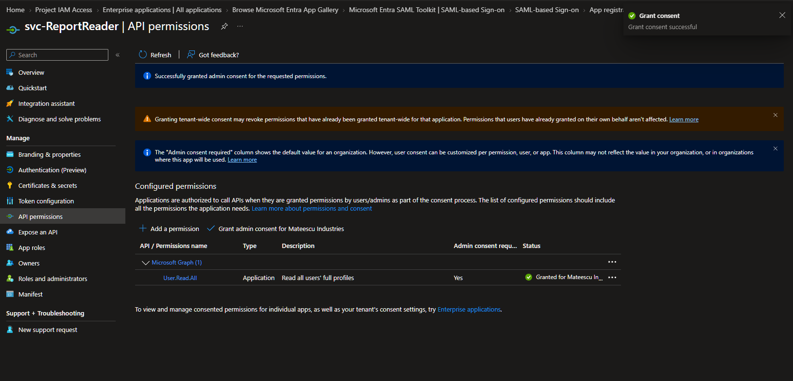
Scope & Honesty
Lab vs Production
A few things were simplified because this is a lab in a trial tenant, and it is worth being clear about them:
Licensing: I assigned licences directly to users because the portal routed group-based licensing elsewhere. In production, group-based licensing is the correct choice because it makes offboarding atomic, reclaiming the licence the moment the group membership drops.
Hybrid identity: the lab is cloud-only. A full build would add an on-premises Active Directory synced to Entra ID, which I have done separately in my Windows Server 2022 domain controller migration project.
Break-glass fail-closed: the access review on the emergency-access group was set to fail closed, but I noted this is the one group where that can backfire, since auto-removal could strip the break-glass account's own exclusion.
Validation
What I Tested
Tested end to end: dynamic groups populating from the department attribute, the mover re-scoped in both directions, a full leaver deprovision, both Conditional Access policies enforced with the break-glass exclusion proven in the sign-in logs, and the PIM remediation confirmed by the before-and-after role assignments.
Configured, not yet exercised: an SSO round-trip sign-in, a PIM activation request and approval, an access package request, and the first cycle of the quarterly access review. Each is built and visible in the portal; running them is the next step for this lab.
The result is a working identity environment covering the SC-300 skill set (design, lifecycle, access control, governance, applications and workload identity), with the security reasoning behind each control.
Automation
The Scripts Behind It
The lifecycle and reporting work in this lab is scripted in entra-iam-automation: PowerShell with the Microsoft Graph SDK for joiners, movers and leavers (cloud-only and hybrid through Entra Connect), read-only reports for standing admins, stale accounts, MFA registration and risky app permissions, and access review campaigns that record their evidence. Every push is linted in CI.